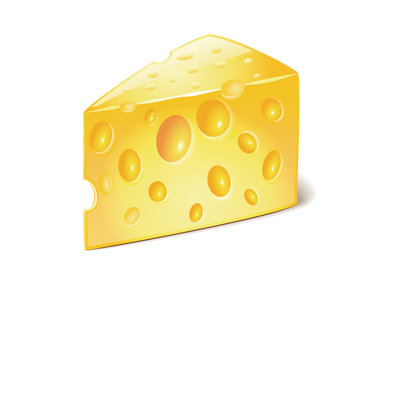

"Many's the night I dreamed of cheese - toasted, mostly" - Robert Louis Stevenson
We make cheese. Lots of cheese; more than eight tons of cheese a year.
We are paid an awful lot of money by people who like cheese. So we make more. Cheese is not just for mice anymore, you know. These days everybody is getting into cheese. On sandwiches, salads, with meat, or alone. It’s the perfect complement to an appetite. So remember.
SAY CHEESE!